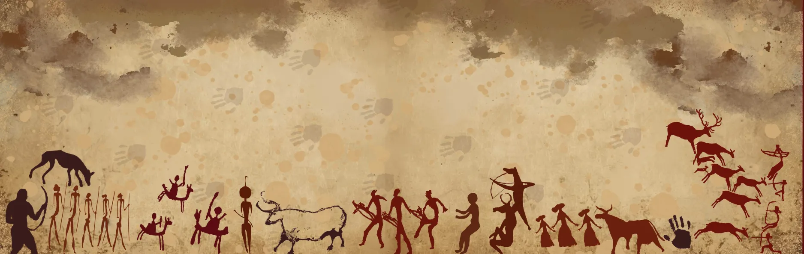

About Us
Kahaani is more than a label — it is a living narrative. Inspired by a love for history and the fluidity of abstract fashion, Kahaani crafts premium scarves that carry emotion, elegance, and meaning. Each piece is a canvas where timeless art is reimagined through contemporary design — a thread connecting the past to the present.
Rooted in storytelling and refined in detail, Kahaani invites fashion-forward individuals to drape themselves not just in fabric, but in stories — of eras, emotions, and expression. Our scarves are not mass-produced accessories; they are wearable artworks, carefully designed to elevate everyday dressing into an intimate experience of style and soul. With a commitment to quality, artistry, and intentional design, Kahaani exists for those who see fashion as language — and choose to speak in stories.
